4DRadarSLAM: A 4D Imaging Radar SLAM System for Large-scale Environments based on Pose Graph Optimization
Jun Zhang∗, Huayang Zhuge∗, Zhenyu Wu, Guohao Peng, Mingxing Wen, Yiyao Liu and Danwei Wang
Abstract— LiDAR-based SLAM may easily fail in adverse weathers (e.g., rain, snow, smoke, fog), while mmWave Radar remains unaffected. However, current researches are primarily focused on 2D (x, y) or 3D (x, y, doppler) Radar and 3D LiDAR, while limited work can be found for 4D Radar (x, y, z, doppler). As a new entrant to the market with unique characteristics, 4D Radar outputs 3D point cloud with added elevation information, rather than 2D point cloud; compared with 3D LiDAR, 4D Radar has noisier and sparser point cloud, making it more challenging to extract geometric features (edge and plane). In this paper, we propose a full system for 4D Radar SLAM consisting of three modules: 1) Front-end module performs scan-to-scan matching to calculate the odometry based on GICP, considering the probability distribution of each point; 2) Loop detection utilizes multiple rule-based loop pre-filtering steps, followed by an intensity scan context step to identify loop candidates, and odometry check to reject false loop; 3) Back-end builds a pose graph using front-end odometry, loop closure, and optional GPS data. Optimal pose is achieved through g2o. We conducted real experiments on two platforms and five datasets (ranging from 240m to 4.8km) and will make the code open-source to promote further research at: https://github.com/zhuge2333/4DRadarSLAM
I. INTRODUCTION
Simultaneous Localization and Mapping (SLAM) is crucial for autonomous mobile robots [1], [2]. In the past decades, large amount of algorithms are proposed for LiDAR SLAM [3], [4], [5], [6], [7], but adverse weather conditions such as rain, snow, smoke, and fog may limit their effectiveness. To overcome this limitation, recent attention has shifted to robust mmWave Radar odometry [8], [9], [10], [11], [12], [13]. However, most of these works are focused on 2D Radar (x, y) or 3D Radar (x, y, doppler), with limited research on 4D Radar (x, y, z, doppler).
The main reasons include: 1) 4D Radar is a relatively new technology and thus there has been limited research in this area. 2) Current 2D/3D Radar odometry cannot be directly adapted to 4D Radar, because 2D/3D Radar odometry normally extract visual features from 2D point cloud, or performs 2D point cloud registration, these approaches are not applicable to the 3D point cloud of 4D Radar. 3) The point cloud collected by 4D Radar are more noisy and sparser compared to 3D LiDAR, which makes it more challenging to extract valid geometric features such as edge and plane. Therefore, direct application of 3D LiDAR SLAM methods is not feasible for 4D Radar SLAM.
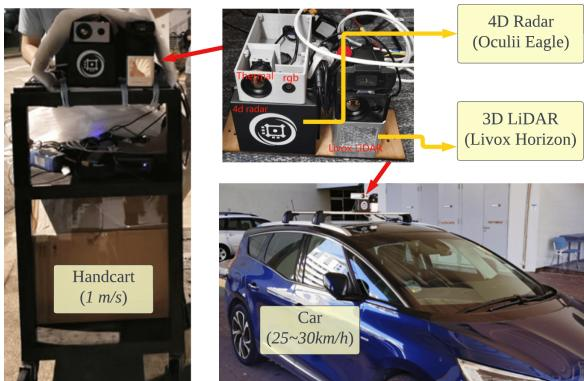
(a) Two platforms (handcart, car)
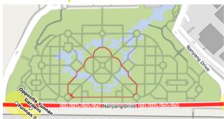
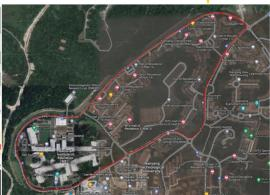
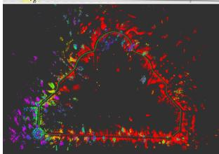
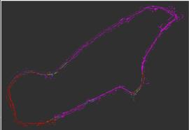
(b) In a garden (339m)
(c) On campus main road (4.2km)
Fig. 1: 4DRadarSLAM is proposed to achieve large-scale SLAM using 4D imaging Radar. (a) The proposed system is tested on two platforms: a handcart (slow speed: around 1m/s), a car (middle speed: 25-30km/h). The mapping result of two selected datasets are demonstrated: (b) in a garden. (c) along the campus main road.
Proposing a SLAM system for 4D imaging Radar is essential for several reasons. 1). 4D Radar outperforms LiDAR in adverse weather conditions. 2). 4D Radar provides elevation information and denser point clouds compared to 2D/3D Radar.
In this paper, we propose 4DRadarSLAM, a complete system consisting of three parts: front-end, loop detection, and back-end. In the front-end, scan-to-scan matching is performed to calculate the odometry. Since it is difficult to extract edge and planes from 4D Radar point cloud, we directly use Generalized-ICP (GICP) [14] on the raw point cloud. By taking into account the probability distribution of each point, our proposed APDGICP (Adaptive Probability Distribution-GICP) improves the performance. In the loop detection, loop pre-filtering is performed to identify possible loop candidates, and then utilize intensity scan context [15] to find the loop closures. We also conduct odometry check to ensure geometry consistency. In the back-end, we construct and solve a pose graph using g2o [16], and output optimized poses. The testing platforms and mapping results are represented in Fig. 1 and Fig. 7. Our contributions are:
• A full SLAM system is proposed for 4D imaging Radar. We open-source the code to promote related research.
• We take the point measurement probability distribution into account in GICP for the front end (APDGICP). In the loop detection, we introduce the intensity scan context to find loop candidates, together with loop prefiltering and odometry check, we can obtain good loop closure. In the back-end, we considered odometry, loop closure and GPS in the pose graph.
• Extensive experiments are conducted with two types of platforms, five datasets, demonstrating the accuracy, robustness and real-time performance.
The paper is organized as follows: Section II provides a review of related works. Section III presents the proposed system. Section IV demonstrates experiments and analysis. Finally, Section V concludes the paper and discusses future work.
II. LITERATURE REVIEW
The literature review will be conducted along two directions: Radar SLAM and 3D LiDAR SLAM.
A. Radar SLAM
Most research are focused on 2D/3D Radar SLAM, which can be divided into three categories:
1) Feature matching based. The radar point cloud is treated as an image, and specific features are extracted and matched to calculate transformation between consecutive scans. For example, SIFT is used in [17]. In [18], the landmarks are extracted and described using a visual descriptor named Binary Annular Statistics Descriptor (BASD) [19]. In [8], the relationships between the landmarks are considered for feature matching. In RadarSLAM [9], SURF feature is utilized. Recently, deep learnt features are also utilized for radar mapping and localization in [20], [21], [22].
2) Point cloud registration based. For example, in [23], [24], 2D ICP is used to match consecutive scans and submaps are used to solve the point cloud sparseness problem. In [11], [25], NDT is adopted for registration. The advantage is it can robustly handle outliers.
3) Correlation-based. The correspondence between consecutive scans is built in the Fourier domain. For example, in [26] and PhaRaO [12], Fourier Mellin Transformation (FMT) is utilized to estimate the transformation matrix. In Fast-MbyM [27], only Fourier Transform (FT) is used, which is translational invariant.
However, those algorithms are designed for 2D/3D Radar, where the pose is estimated in SE(2) rather than SE(3). Limited research has been done on 4D Radar SLAM. In [13], a continuous-time framework is proposed to fuse 4D Radar and IMU for odometry calculation. To gain insight, we will then review 3D LiDAR SLAM methods.
B. 3D LiDAR SLAM
Large amount of 3D LiDAR SLAM algorithms have been proposed, which can be divided into two categories:
1) Point cloud registration based. The classical ICP [28] can be used to obtain the transformation between consecutive scans. Another variant is GICP [14], which combines the advantages of ICP and point-to-plane ICP in a probabilistic framework. Its performance is validated in largescale perceptually-degraded subterranean environments in LAMP [6]. Normal distribution transform (NDT) [29], [30] assigns a normal distribution to each patch, which locally models the probability of measuring a point. It has been successfully deployed in mine tunnel environment [31] and adopted in HDL Graph SLAM [5].
2) Feature matching based. LOAM [3] is representative, which extracts edges and planes as features. Point-to-edge and point-to-plane ICP are performed to calculate the transformation. LeGO-LOAM [4] and Loam Livox [7] follow the basic idea. They have received wide applications [32].
However, due to the much noisier and sparser nature of 4D Radar, it is challenging to extract reliable edge and plane features. Therefore, our 4D Radar SLAM will be focused on point cloud registration based methods.
III. METHODOLOGY
A. Notations
This paper uses the following notations. The radar frame at time t is denoted . The starting radar frame is denoted as . One frame of point cloud at time t is represented as , which is a set of points, denoted as for , where z represent the 3D coordinate, and v represents the doppler velocity. A key frame is denoted as . The transformation matrix between the current frame t and the last nearest key frame k is denoted as represents the pose of the radar in the odometry frame, which will be abbreviated as
B. Overview
An overview of the 4DRadarSLAM system is shown in Fig. 2, consisting of three modules: front-end, loop detection, and back-end. In the front-end (Sec.III-C), the 4D Radar point cloud is used as input to estimate odometry and generate key frames. The loop detection module (Sec.III-D) assesses each new key frame to determine whether it can form a loop closure. In the back-end (Sec.III-E), a pose graph is constructed and optimized using g2o [16], producing optimized poses as output.
C. Front-end
1) Pre-processing: To ensure robustness of the SLAM system, dynamic objects should be filtered out in the first place. Doppler velocity information from radar can be used to identify such objects. In this study, we estimate the radar ego-velocity using a linear least squares approach proposed in [33]. Using the estimated doppler velocity and egovelocity, we are able to determine the real velocity of objects.
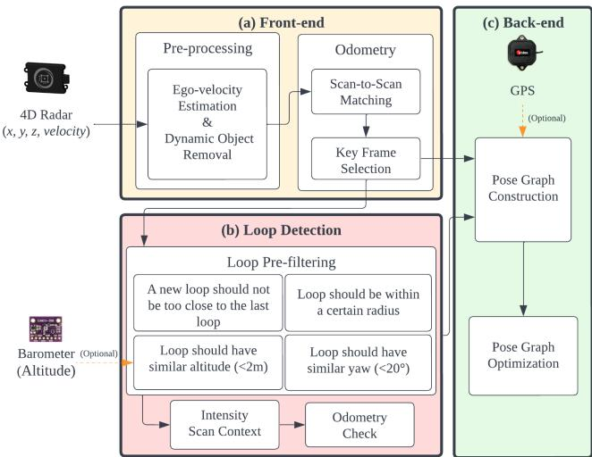
Fig. 2: Overview of the proposed 4DRadarSLAM system. It consists of three modules: (a) Front-end: to calculate the odometry. (b) Loop Detection: to detect the loop closure. (c) Back-end: pose graph construction and optimization.
2) Scan-to-Scan Matching: In this step, the input is the last key frame and a new frame and . The objective is to find the transformation (from t to k). Since the point cloud of 4D radar is noisier, it is not straightforward to extract geometric features (such as edges and planes). While we find that GICP can output acceptable result compared with ICP and NDT. The initial transformation is set to the last transformation
We propose a new algorithm called Adaptive Probability Distribution-GICP (APDGICP), which takes into account the spatial probability distribution of each point in GICP. According to the radar’s manual, the uncertainty of a point’s range measurement is given by , where r and are the measured range and its uncertainty, respectively. The azimuth and elevation angle accuracy is and respectively, which lead to uncertainties in the azimuth and elevation directions in spherical coordinates, approximated by and . The resulting probability distribution is shown in Fig. 3, resembling an ellipsoid (orange) with one axis pointing to the origin and the three half-axes having lengths of (range), (azimuth), and (elevation).
The covariance matrix of the point in the local frame (Fig. 3 purple) is $S = \left\lceil \begin{array} { c c c } { { \sigma _ { r } } } & { { 0 } } & { { \mathit { \widehat { \sigma } } } } \ { { 0 } } & { { \sigma _ { a } } } & { { 0 } } \ { { 0 } } & { { 0 } } & { { \sigma _ { e } } } \end{array} \right\rceil$ . We need to transform it to the radar frame (Fig. 3 black). According to multivariate normal distribution and linear transformation, a three-dimensional linear transform matrix can be built. Here, A is the covariance in radar frame, R is the rotation matrix from local to radar frame, $\left[ \begin{array} { c c c } { { \cos \theta _ { a } \cos \theta _ { e } } } & { { \sin \theta _ { a } } } & { { - \cos \theta _ { a } \sin \theta _ { e } } } \ { { - \sin \theta _ { a } \cos \theta _ { e } } } & { { \cos \theta _ { a } } } & { { \sin \theta _ { a } \sin \theta _ { e } } } \ { { \sin \theta _ { e } } } & { { 0 } } & { { \cos \theta _ { e } } } \end{array} \right] ~ , ~ \theta _ { a }\theta _ { e }C _ { p } = A A ^ { T }$ In GICP, the transform matrix T is calculated using
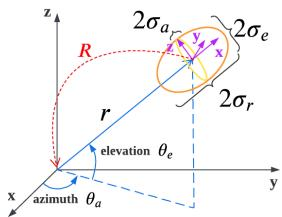
Fig. 3: The probability distribution of a point.
Maximum Likelihood Estimation (MLE) by Eq. (1) [14].
where and are covariance matrices associated with the corresponding measured points and is their distance. In our proposed APDGICP, we derive it as Eq. (2).
By adding an additional term to the equation, the algorithm considers not only geometric distribution of the neighboring points, but also the spatial variance of each point. The rationale behind this is that points closer to the radar have lower uncertainty and should be given higher weight, vice versa.
3) Key Frame Selection: The first frame is designated as a fixed key frame, while subsequent key frames are determined if it meets any of the following two conditions: the translation between the current frame and the last key frame exceeds a threshold , the rotation between the current frame and the last key frame exceeds a threshold . The threshold parameters are set empirically as follows: or
The scan-to-scan matching result between and key frame is added to the pose graph as binary edges. The covariance of the edge, denoted as , is calculated based on the fitness score of the two key frame clouds.
D. Loop Detection
In this step, each key frame is compared with the database key frames to determine whether it forms a loop closure.
1) Loop pre-filtering: To avoid searching the entire database for loop detection, loop pre-filtering step is carried out to identify potential loops based on four rules: i) adherence to distance restrictions, meaning that a new loop’s query frame should not be too close to the last loop’s query frame, and a loop’s frames should not be too close; ii) ensuring that a loop’s frames are within a certain radius (spatially near). We adaptively adjust the searching radius, which is proportional to the travel distance between frames, and once a loop is found, the searching radius will decrease accordingly if a candidate loop is close to it; iii) enforcing a threshold of 2m for the altitude difference between a loop’s frames, based on altitude information from the barometer; iv) ensuring that a loop’s frames have a similar yaw angle, with a threshold of found to be suitable for avoiding false positive matching for our radar.
2) Scan Context: After pre-filtering the loop frames, only potential candidates are sent to the intensity scan context module. We chose intensity scan context [15] over scan context [34] because radar height information is noisy due to sensor limitations and multiple reflection echoes. Using maximum height as context would be inaccurate. Instead, we used the maximum intensity/power of reflected signal to construct the scan context matrix, as it is more stable and valuable for radar.
Scan context was originally proposed for LiDAR with a azimuth FOV. We adapted it to 4D Radar with a narrower 110° azimuth FOV. To do this, we divided the point cloud into 40 rings and 20 sectors, resulting in a unit ring gap of 2m, and a unit sector angle of 5.5°.
3) Odometry Check: After performing scan context to find the most possible loop closure, we must consider geometric consistency. Scan context alone may introduce geometric inconsistency, which would be a disaster to back-end pose graph optimization. To avoid this issue, we adopted the odometry check step from LAMP [6].
Fig. 4 illustrates the basic concept. The idea is to compare the transformation from the query frame to the loop candidate i with the odometry from to i, as expressed in Eq. (3). (odom) If the average accumulated pose error exceeds a translation and rotation threshold and outlier loops can be rejected, where m is the number of key frames from i to In our experiments, we set ϵ = 0.15m and ϵ = 0.05rad (or 2.9°).
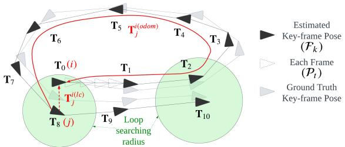
Fig. 4: Pose graph and loop detection.
E. Back-end
A pose graph will be constructed based on the front-end odometry, the loop closure, and GPS signal (if available). As shown in Fig. 4, the key frames are represented as nodes, the edge between two nodes represents the odometry constraint (binary edge). When a loop closure is determined (red dash line), it is added as a constraint (binary edge). If GPS signal is available, it can also be added into the pose graph as an unary edge with covariance obtained directly from GPS data. Finally, the pose graph is optimized using the g2o library [16], resulting in optimized poses.
IV. EXPERIMENTS AND ANALYSIS
A. Dataset Collection
To collect our datasets, we used two platforms shown in Fig. 1(a): a handcart and a car equipped with our sensor suite. This allowed us to collect data in small- and largescale environments, as well as structured and unstructured environments, at low and middle speeds. A summary of the 5 datasets is shown in Tab. I, where all of them are in the NTU campus. The satellite image of the datasets are presented in Fig. 1(b)(c) and Fig. 7.
TABLE I. SUMMARY OF THE 5 DATASETS, STRU/UNSTRUC: STRUCTURED OR UNSTRUCTURED ENVIRONMENT.
| Platform | Speed | Name | Length | GPS | Stru/Unstruc |
| handcart | ≈1 m/s | cp | 246 m | = | struc. |
| garden | 339 m | unstruc. | |||
| car | 25 km/h | nyl loop 1 | 1017 m 4.79 km | = yes | semi-struc. semi-struc. |
| 30 km/h | loop 2 | 4.23 km | yes | semi-struc. |
We used the Oculii Eagle 4D Radar, with range up to 400m, azimuth and elevation angle resolutions of and 1°. Additionally, we used a BMP388 barometer and a ubloxf9p GPS. The Livox Horizon 3D LiDAR was used for ground truth pose generation through LiDAR SLAM. All computations were performed on a laptop with AMD R7- 5800H CPU, 16GB RAM, Ubuntu 20.04, and ROS noetic.
The ground truth trajectory was obtained from a tightly-coupled LiDAR-Visual-Inertial SLAM system named R2LIVE [35]. To evaluate trajectory error, we used the open-source tool rpg trajectory evaluation [36] to compute both Absolute Trajectory Error (ATE) and Relative Error (RE). To align estimated trajectory (Radar) with the ground truth trajectory (LiDAR), we calibrated extrinsic parameter between the LiDAR and Radar. This was obtained in two steps: first, extrinsic calibration between 3D LiDAR and the thermal camera using a four-circular-hole board 1 in [37], [38]; second, extrinsic calibration between the thermal camera and the 4D Radar via our previous work [39].
B. Quantitative Analysis
1) Performance of front-end and back-end: In this experiment, we evaluated the ATE and RE of the front-end and back-end algorithms, namely gicp, gicp-lc, apdgicp, apdgicp-lc, and apdgicp-gps. The first two (gicp and apdgicp) use only the front-end, and apdgicp is our proposed point cloud registration method considering point probability distribution. Meanwhile, gicp-lc and apdgicp-lc represent the result after back-end optimization via loop closure, and apdgicp-gps denotes the result after back-end optimization using GPS. Note that Only “loop 1” and “loop 2” have GPS data available.
Fig. 6 presents the ATE results of 5 datasets. The following observations can be made: i) ATE increases with the traveled distance for all configurations. ii) Our proposed APDGICP outperforms GICP for small-scale datasets (”cp”, ”garden”, ”nyl”) in the front-end, but GICP performs better for largescale datasets (”loop 1”, ”loop 2”). iii) Accurate loop closure significantly improves the accuracy, and the difference between GICP and APDGICP becomes minor in the back-end (gicp-lc, apdgicp-lc). Hence, correct loop closure and backend optimization contribute significantly to the performance. iv). The ATE is small and negligible when GPS is available (“loop 1” and “loop 2”), indicating that GPS improves the performance by a large margin.
TABLE II. QUANTITATIVE ANALYSIS: TRAJECTORY ERROR RE AND ATE
| gicp | gicp-lc | apdgicp | apdgicp-lc | apdgicp-gps | |||||||||||
| Dataset | |||||||||||||||
| (%) | (deg/m) | (m) | (%) | (deg/m) | (m) | (%) | (deg/m) | (m) | (%) | (deg/m) | (m) | (%) | (deg/m) | (m) | |
| cp | 4.13 | 0.0552 | 3.96 | 2.79 | 0.0511 | 2.54 | 3.56 | 0.0369 | 2.61 | 3.02 | 0.0448 | 2.35 | |||
| garden | 2.64 | 0.0310 | 4.53 | 2.38 | 0.0293 | 3.69 | 2.69 | 0.0350 | 4.06 | 2.05 | 0.0309 | 2.41 | |||
| nyl | 4.62 | 0.0184 | 17.42 | 3.10 | 0.0120 | 14.34 | 3.55 | 0.0171 | 21.30 | 2.85 | 0.0131 | 11.37 | |||
| loop 1 | 4.84 | 0.0060 | 132.92 | 4.12 | 0.0065 | 68.88 | 6.09 | 0.0082 | 227.54 | 5.79 | 0.0100 | 84.88 | 3.00 | 0.0057 | 5.28 |
| loop 2 | 3.22 | 0.0060 | 57.29 | 3.46 | 0.0052 | 72.28 | 4.09 | 0.0097 | 59.12 | 4.03 | 0.0069 | 43.67 | 3.84 | 0.0052 | 2.94 |
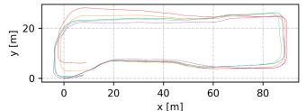
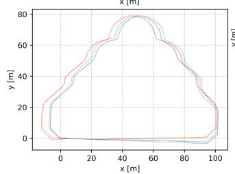
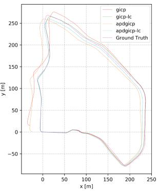
(a) On handcart (low speed), datasets “cp”,“garden”,“nyl”.
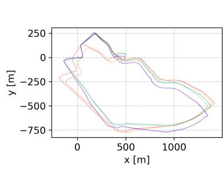
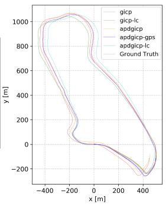
(b) On car (middle speed), datasets “loop 1”,“loop
Fig. 5: Compare our estimated trajectory with the ground truth trajectory, under 5 datasets.
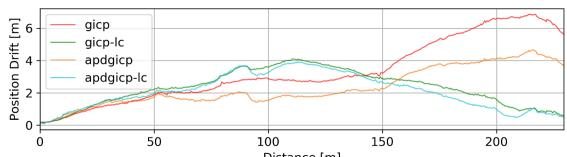
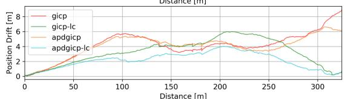
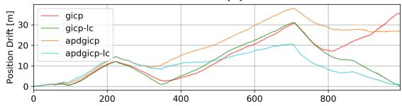
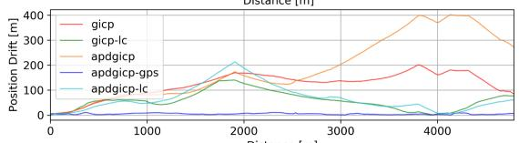
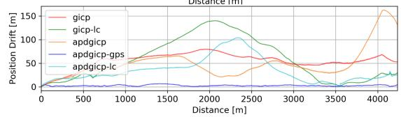
Fig. 6: Absolute Trajectory Error (ATE). From top to down: dataset “cp”, “garden”, “nyl”, “loop 1”, “loop 2”.
For ii), we analyzed the possible reasons why our APDG-ICP is a slightly worse than GICP on larger datasets “loop
and “loop . More points are distributed further apart (as shown in Fig. 8) in larger datasets, which receive lower weights and thus provide less valid points for registration. In comparison to GICP, the number of points decreases by 2 − 3 times. However, for smaller environments (“cp”, “garden”), APDGICP is better, while for the middle environment (”nyl”), APDGICP performs slightly better.
To facilitate evaluation, the numerical values of RE and ATE are listed in Tab. II. Here, and represent the translation and rotation errors for RE, while represents ATE. We observed that: i) For the frontend (gicp, apdgicp) have an overall translation error of and rotation error of [0.0060, 0.0552]deg/m. ii) The loop closure improves the translation error to and rotation error to . The ATE also improves from 2.61m to 2.35m for , from 4.06m to 2.41m for “garden” and from 21.30m to 11.37m for “nyl”. iii) The back-end optimization using GPS significantly improves the ATE, reducing it from 68.88m to 5.28m for “loop 1” and from 43.67m to 2.94m for “loop 2”.
For straightforward visualization, the trajectories of different methods on 5 datasets are plotted in Fig. 5.
2) Efficiency: To evaluate efficiency, we recorded computation times for each algorithm step on all datasets and listed the median values in Tab. III. The results show that: i) The front-end only requires 4ms for all datasets. ii) The loop detection module takes 131ms, 121ms, 142ms for “cp”,“garden”,“nyl” and 29ms, 44ms for “loop 1”,“loop 2”, where > 80% time is spent on the scan context portion. The reason “loop 1” and “loop 2” spend less time on scan context is due to adaptive adjustment of the searching radius (Sec.III-D.1): For the two datasets, there are more loops. When a loop is identified, the searching radius for subsequent loops will decrease and thus the candidate number will decrease correspondingly, leading to less computation. iii) The backend takes no more than 2.2s.
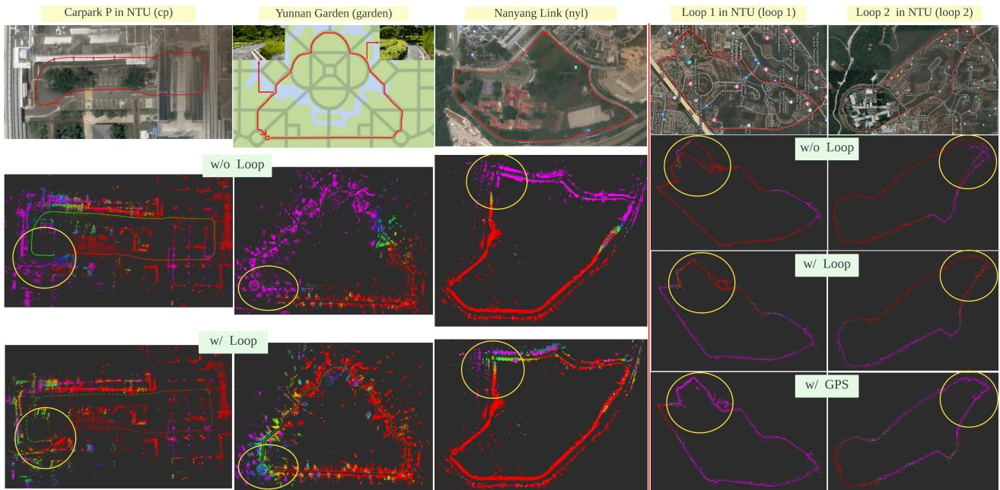
Fig. 7: Visualization of the satellite image and map of 5 datasets (“cp”, “garden”, “nyl”, “loop 1”, “loop 2”). It is obvious that both loop closure and GPS constraints improve the map quality (the yellow circles part).
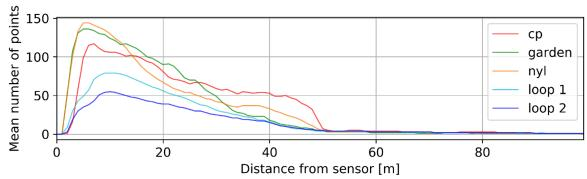
Fig. 8: Point distribution with respect to distance of five datasets.
TABLE III. TIME CONSUMPTION OF EACH STEP FOR EACH DATASET (UNIT: MS).
| Sengs | Dataset Length(m) Key-frame distance(m) No. of | cp 246 | garden 339 | nyl 1017 | loop 1 4795 | loop 2 4233 |
| 0.5 0.5 | 0.5 | 2.0 | 2.0 | |||
| Fron-end | keyframes Ego-velocity | 437 | 623 | 1788 | 2152 | 1803 |
| estimation Scan-to-Scan | 1.1 | 1.1 | 1.1 | 0.9 | 0.8 | |
| matching | 2.9 | 2.8 | 3.1 | 2.8 | 3.0 | |
| Sub-total Loop | 4.0 | 3.9 | 4.2 | 3.7 | 3.8 | |
| pre-filtering Scan | 11.3 | 14.5 | 28.8 | 1.3 | 2.2 | |
| Loeceton Dton | context Odometry | 119.9 | 107.4 | 114.0 | 43.2 | 27.4 |
| check Sub-total | 0.05 131.25 | 0.06 121.96 | 0.14 142.94 | 0.02 44.52 | 0.02 | |
| Bac- ed g2o | 1049 | 897 | 2120 | 285 | 29.62 592 | |
C. Qualitative Analysis
For qualitative analysis, we visualized the point cloud maps for 5 datasets using three options: without loop detection (w/o loop); with loop detection and back-end optimization (w/ loop); and with GPS and back-end optimization (w/ gps), as shown in Fig. 7. The results show that when loop closure is not used, there are noticeable errors in the map. However, after loop closure or using GPS, the errors are significantly reduced.
V. CONCLUSIONS AND FUTURE WORK
In this paper, a full SLAM system is introduced for 4D imaging Radar consisting of three modules: front-end, loop detection and back-end. In the front-end, we estimated the radar ego-velocity to remove dynamic objects, and proposed the APDGICP algorithm, which considers the probability distribution of each point in the original GICP for scanto-scan matching. In loop detection, we introduced several loop filtering methods and used intensity scan context to find loop candidates. We also implemented an odometry check module to determine the optimal loop. In the back-end, a pose graph is constructed based on the front-end odometry, detected loop closures and GPS data. Extensive experiments were performed with our self-collected datasets, which cover various environments and speeds, including structured and unstructured, small-scale and large-scale environments, low speed and middle speed. Our proposed system achieves a Relative Error (RE) of 2.05%, 0.0052deg/m, and an Absolute Trajectory Error (ATE) of 2.35m, with real-time performance on a laptop. Future work includes: fusing the 4D Radar and IMU to achieve more robust SLAM.
VI. ACKNOWLEDGMENTS
The authors would like to thank the reviewers for their constructive comments and suggestions, which have helped to improve the quality and presentation of the paper. The authors would like to express their thanks to Xiao Renxiang and Mharolkar Sanat Rajesh for their help with hardware setup and data collection.
[1] D. Su, H. Kong, S. Sukkarieh, and S. Huang, “Necessary and Sufficient Conditions for Observability of SLAM-Based TDOA Sensor Array Calibration and Source Localization,” IEEE Transactions on Robotics, vol. 37, no. 5, pp. 1451–1468, 2021.
[2] S. Eiffert, N. D. Wallace, H. Kong, N. Pirmarzdashti, and S. Sukkarieh, “Resource and Response Aware Path Planning for Long-term Autonomy of Ground Robots in Agriculture,” Field Robotics, vol. 2, pp. 1– 33, 2022.
[3] J. Zhang and S. Singh, “LOAM: Lidar Odometry and Mapping in Real-time,” in Robotics: Science and Systems Conference, 07 2014.
[4] T. Shan and B. Englot, “LeGO-LOAM: Lightweight and Ground-Optimized Lidar Odometry and Mapping on Variable Terrain,” in 2018 IEEE/RSJ International Conference on Intelligent Robots and Systems (IROS), pp. 4758–4765, 2018.
[5] K. Koide, J. Miura, and E. Menegatti, “A Portable 3D LIDAR-based System for Long-term and Wide-area People Behavior Measurement,” International Journal of Advanced Robotic Systems, vol. 16, no. 2, p. 1729881419841532, 2019.
[6] K. Ebadi, Y. Chang, M. Palieri, A. Stephens, A. Hatteland, E. Heiden, A. Thakur, N. Funabiki, B. Morrell, S. Wood, L. Carlone, and A.-a. Agha-mohammadi, “LAMP: Large-Scale Autonomous Mapping and Positioning for Exploration of Perceptually-Degraded Subterranean Environments,” in 2020 IEEE International Conference on Robotics and Automation (ICRA), pp. 80–86, 2020.
[7] J. Lin and F. Zhang, “Loam livox: A Fast, Robust, High-precision LiDAR Odometry and Mapping Package for LiDARs of Small FoV,” in 2020 IEEE International Conference on Robotics and Automation (ICRA), pp. 3126–3131, 2020.
[8] S. H. Cen and P. Newman, “Precise Ego-Motion Estimation with Millimeter-Wave Radar Under Diverse and Challenging Conditions,” in 2018 IEEE International Conference on Robotics and Automation (ICRA), pp. 6045–6052, 2018.
[9] Z. Hong, Y. Petillot, and S. Wang, “RadarSLAM: Radar based Large-Scale SLAM in All Weathers,” in 2020 IEEE/RSJ International Conference on Intelligent Robots and Systems (IROS), pp. 5164–5170, 2020.
[10] D. Adolfsson, M. Magnusson, A. Alhashimi, A. J. Lilienthal, and H. Andreasson, “CFEAR Radarodometry - Conservative Filtering for Efficient and Accurate Radar Odometry,” in 2021 IEEE/RSJ International Conference on Intelligent Robots and Systems (IROS), pp. 5462– 5469, 2021.
[11] P.-C. Kung, C.-C. Wang, and W.-C. Lin, “A Normal Distribution Transform-Based Radar Odometry Designed For Scanning and Automotive Radars,” in 2021 IEEE International Conference on Robotics and Automation (ICRA), pp. 14417–14423, 2021.
[12] Y. S. Park, Y.-S. Shin, and A. Kim, “PhaRaO: Direct Radar Odometry using Phase Correlation,” in 2020 IEEE International Conference on Robotics and Automation (ICRA), pp. 2617–2623, 2020.
[13] Y. Z. Ng, B. Choi, R. Tan, and L. Heng, “Continuous-time Radarinertial Odometry for Automotive Radars,” in 2021 IEEE/RSJ International Conference on Intelligent Robots and Systems (IROS), pp. 323– 330, 2021.
[14] A. Segal, D. Hahnel, and S. Thrun, “Generalized-ICP,” in¨ Robotics: Science and Systems, 06 2009.
[15] H. Wang, C. Wang, and L. Xie, “Intensity Scan Context: Coding Intensity and Geometry Relations for Loop Closure Detection,” in 2020 IEEE International Conference on Robotics and Automation (ICRA), pp. 2095–2101, 2020.
[16] R. Kummerle, G. Grisetti, H. Strasdat, K. Konolige, and W. Burgard, ¨ “G2o: A General Framework for Graph Optimization,” in 2011 IEEE International Conference on Robotics and Automation, pp. 3607–3613, 2011.
[17] D. Tornqvist, F. Gustafsson, H. Svensson, and P. Carlbom, “Radar¨ SLAM using Visual Features,” EURASIP Journal on Advances in Signal Processing, no. 71, 2011.
[18] F. Schuster, C. G. Keller, M. Rapp, M. Haueis, and C. Curio, “Landmark based Radar SLAM using Graph Optimization,” in 2016 IEEE 19th International Conference on Intelligent Transportation Systems (ITSC), pp. 2559–2564, 2016.
[19] M. Rapp, K. Dietmayer, M. Hahn, F. Schuster, J. Lombacher, and J. Dickmann, “FSCD and BASD: Robust Landmark Detection and Description on Radar-based Grids,” in 2016 IEEE MTT-S International Conference on Microwaves for Intelligent Mobility (ICMIM), pp. 1–4, 2016.
[20] D. Barnes and I. Posner, “Under the Radar: Learning to Predict Robust Keypoints for Odometry Estimation and Metric Localisation in Radar,” in 2020 IEEE International Conference on Robotics and Automation (ICRA), pp. 9484–9490, 2020.
[21] S. Saftescu, M. Gadd, D. De Martini, D. Barnes, and P. Newman,˘ “Kidnapped Radar: Topological Radar Localisation using Rotationally-Invariant Metric Learning,” in 2020 IEEE International Conference on Robotics and Automation (ICRA), pp. 4358–4364, 2020.
[22] K. Burnett, D. Yoon, A. Schoellig, and T. Barfoot, “Radar Odometry Combining Probabilistic Estimation and Unsupervised Feature Learning,” in 2020 IEEE International Conference on Robotics and Automation (ICRA), 05 2021.
[23] M. Holder, S. Hellwig, and H. Winner, “Real-Time Pose Graph SLAM based on Radar,” in 2019 IEEE Intelligent Vehicles Symposium (IV), pp. 1145–1151, 2019.
[24] Z. Zeng, X. Dang, Y. Li, X. Bu, and X. Liang, “Angular Super-Resolution Radar SLAM,” in 2021 IEEE/RSJ International Conference on Intelligent Robots and Systems (IROS), pp. 5456–5461, 2021.
[25] M. Rapp, M. Barjenbruch, M. Hahn, J. Dickmann, and K. Dietmayer, “Probabilistic Ego-motion Estimation using Multiple Automotive Radar Sensors,” Robotics and Autonomous Systems, vol. 89, pp. 136–146, 2017.
[26] P. Checchin, F. Gerossier, C. Blanc, R. Chapuis, and L. Trassoudaine,´ “Radar Scan Matching SLAM Using the Fourier-Mellin Transform,” in Field and Service Robotics (A. Howard, K. Iagnemma, and A. Kelly, eds.), (Berlin, Heidelberg), pp. 151–161, Springer Berlin Heidelberg, 2010.
[27] R. Weston, M. Gadd, D. De Martini, P. Newman, and I. Posner, “Fast-MbyM: Leveraging Translational Invariance of the Fourier Transform for Efficient and Accurate Radar Odometry,” in 2022 International Conference on Robotics and Automation (ICRA), pp. 2186–2192, 2022.
[28] P. Besl and N. D. McKay, “A Method for Registration of 3-D Shapes,” IEEE Transactions on Pattern Analysis and Machine Intelligence, vol. 14, no. 2, pp. 239–256, 1992.
[29] P. Biber and W. Strasser, “The Normal Distributions Transform: A New Approach to Laser Scan Matching,” in Proceedings 2003 IEEE/RSJ International Conference on Intelligent Robots and Systems (IROS 2003) (Cat. No.03CH37453), vol. 3, pp. 2743–2748 vol.3, 2003.
[30] M. Magnusson, The Three-Dimensional Normal-Distributions Transform - an Efficient Representation for Registration, Surface Analysis, and Loop Detection. PhD thesis, 12 2009.
[31] M. Magnusson, A. Lilienthal, and T. Duckett, “Scan Registration for Autonomous Mining Vehicles using 3D-NDT,” Journal of Field Robotics, vol. 24, no. 10, pp. 803–827, 2007.
[32] Z. Wu, W. Wang, J. Zhang, Q. Lyu, H. Zhang, and D. Wang, “Global Localization in Repetitive and Ambiguous Environments,” in Proc IEEE Int. Conf. Robot. Autom. (ICRA), IEEE, 2023.
[33] C. Doer and G. F. Trommer, “An EKF Based Approach to Radar Inertial Odometry,” in 2020 IEEE International Conference on Multisensor Fusion and Integration for Intelligent Systems (MFI), pp. 152–159, 2020.
[34] G. Kim and A. Kim, “Scan Context: Egocentric Spatial Descriptor for Place Recognition Within 3D Point Cloud Map,” in 2018 IEEE/RSJ
International Conference on Intelligent Robots and Systems (IROS), pp. 4802–4809, 2018.
[35] J. Lin, C. Zheng, W. Xu, and F. Zhang, “R2LIVE: A Robust, Real-Time, LiDAR-Inertial-Visual Tightly-Coupled State Estimator and Mapping,” IEEE Robotics and Automation Letters, vol. 6, no. 4, pp. 7469–7476, 2021.
[36] Z. Zhang and D. Scaramuzza, “A Tutorial on Quantitative Trajectory Evaluation for Visual(-Inertial) Odometry,” in IEEE/RSJ Int. Conf. Intell. Robot. Syst. (IROS), 2018.
[37] J. Zhang, R. Zhang, Y. Yue, C. Yang, M. Wen, and D. Wang, “SLAT-Calib: Extrinsic Calibration between a Sparse 3D LiDAR and a Limited-FOV Low-resolution Thermal Camera,” in 2019 IEEE International Conference on Robotics and Biomimetics (ROBIO), pp. 648– 653, 2019.
[38] Y. Liu, “ThermalVoxCalib: automatic extrinsic calibration between a non-repetitive scanning 3D LiDAR and a thermal camera,” 2022.
[39] J. Zhang, S. Zhang, G. Peng, H. Zhang, and D. Wang, “3DRadar2ThermalCalib: Accurate Extrinsic Calibration between a 3D mmWave Radar and a Thermal Camera Using a Spherical-Trihedral,” in 2022 IEEE 25th International Conference on Intelligent Transportation Systems (ITSC), pp. 2744–2749, 2022.
md/2023_4DRadarSLAM__A_4D_Imaging_Radar_SLAM_System_for_Large-sc.md 预渲染生成（OCR 语料，插图取自原文）。
公式以 MathML 呈现，浏览器原生渲染，不依赖外部脚本或字体 CDN。